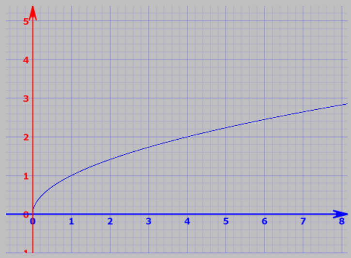

For the new & aspiring software developer, programming fundamentals are perhaps the most impactful thing to learn for making progress. Programming fundamentals exist in all languages, all frameworks & the majority of tech.
What Are Fundamentals?
Really, what I am talking about here, are the Computer Science fundamentals which explain the existence of programming & machines, including the theory which interrelates them.
To put some numbers on it, when you first learn a conventional programming language, knowledge relevance looks something like this:
| Learning Percentile | Relevance to All Languages |
|---|---|
| First 10% | 95% relevant to all languages |
| First 20% | 80% relevant to all languages |
| First 30% | 60% relevant to all languages |
| First 40% | 40% relevant to all languages |
| First 50% | 20% relevant to all languages |
| First 60% | 5% relevant to all languages |
Core Fundamentals
Here, we are talking about understanding binary numbers, compiler theory, common math, basic syntax, abstraction, functions, variables, data types, classes, dependency management, creating environments, etc. All the essentials.
These fundamentals are the foundation upon which everything else is built. They appear in:
- Python
- JavaScript
- Java
- C++
- Go
- Rust
- And virtually every other language
Why Invest in Fundamentals?
Learning fundamentals first has massive returns on investment. When you understand the fundamentals deeply:
- Learning new languages becomes easy: You already know the core concepts. Now you just need to learn syntax.
- Debugging becomes easier: You understand how code actually works at a deeper level.
- You write better code: You understand why certain patterns work better than others.
- You can interview better: Fundamental questions appear in every technical interview.
- You advance faster: You're not constantly confused about basic concepts.
The Fundamentals Checklist
Make sure you understand these fundamentals:
Core Concepts
- Variables and data types
- Operators and expressions
- Control flow (if/else, loops)
- Functions and scope
- Arrays and collections
Intermediate Concepts
- Object-oriented programming (classes, inheritance)
- Functional programming basics
- Error handling and exceptions
- File I/O
- Basic algorithms and data structures
Advanced Fundamentals
- Big O complexity and algorithm analysis
- Common data structures (linked lists, trees, graphs)
- Sorting and searching algorithms
- Design patterns
- Memory management and pointers (where applicable)
How to Learn Fundamentals
Learning fundamentals effectively requires:
- Choose a language: Pick one language to learn fundamentals in. Don't jump around.
- Use a good resource: A comprehensive textbook or course beats random tutorials.
- Practice constantly: Build small programs that exercise each concept.
- Understand the why: Don't just memorize syntax. Understand why things work.
- Don't rush: This is the foundation. Spend time here.
The Long-Term Payoff
Investing time in fundamentals now pays dividends throughout your entire career. Developers with strong fundamentals:
- Switch languages and frameworks more easily
- Advance to senior positions faster
- Earn more money
- Are more confident in their abilities
- Can solve problems independently
Start Now
If you're beginning your coding journey, invest heavily in fundamentals. Don't jump straight to frameworks or trendy technologies. Build a solid foundation. It will serve you well for decades.
The fundamentals of coding are the key to success. Master them, and the rest will follow.